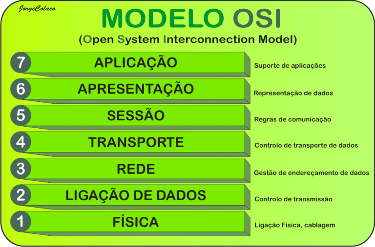
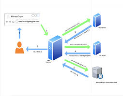
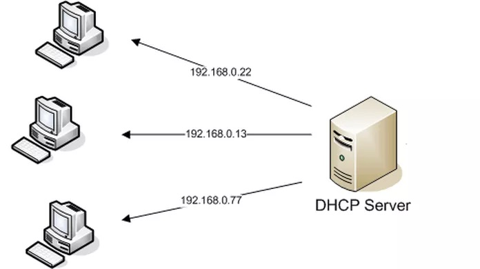

Serviços de Redes
Modelo OSI
O modelo de interconexão de sistemas abertos (OSI) é um modelo conceitual criado pela Organização Internacional de Normalização que permite que diversos sistemas de comunicação se comuniquem usando protocolos padronizados.
Modelo TCP/IP

O TCP/IP é fundamental para a rede de internet. Esses dois protocolos garantem que pacotes de informações cheguem a seu destino de forma correta e segura. Dessa forma, conseguimos tratar e definir os dados entre os dispositivos antes de alcançarem seus destinos.
UDP
O User Datagram Protocol (UDP) é um protocolo de Internet mais simples e sem conexão, no qual os serviços de verificação e recuperação de erros não são necessários.O protocolo UDP funciona de forma semelhante ao TCP, mas elimina todo o material de verificação de erros. Toda a comunicação de ida e volta introduz latência, tornando as coisas mais lentas.
DNS
DNS ou Domain Name System é um sistema de banco de dados utilizado na internet com o objetivo de traduzir os endereços dos sites de uma complexa sequencia numerica para algo mais simples e amigavel,como os nomes dos endereços que escrevemos quando usamos o navegador.
DHCP
O protocolo DHCP é um protocolo de cliente/servidor que fornece automaticamente um host IP (Protocolo de Internet) com seu endereço IP e outras informações de configuração relacionadas, como a máscara de sub-rede e o gateway padrão.
FTP
FTP (File Transfer Protocol) é um protocolo de rede usado para transferir arquivos entre computadores via conexões TCP/IP. Ele permite que usuários autorizados enviem e recebam arquivos de servidores FTP.
HTTP
HTTP é um protocolo de transferência que possibilita que as pessoas que inserem a URL do seu site na Web possam ver os conteúdos e dados que nele existem. A sigla vem do inglês Hypertext Transfer Protocol. Esse sistema é a base da comunicação que existe em toda a Internet em que os sites e conteúdos que tragam hiperlinks possam ser encontrados mais facilmente pelo público por meio de um clique do mouse ou um toque na tela.
HTTPS
HTTPS ou Hyper Text Transfer Protocol Secure, é um protocolo da internet que visa realizar a comunicação de dispositivos com os servidores do mundo todo. O protocolo HTTPS surgiu como uma evolução ao procolo antecessor o HTTP, a diferença entre eles é que o HTTPS possui a comunicação de dispositivos criptografada.
WEBSERVER

Um web server é um sistema computacional que hospeda e fornece acesso aos conteúdos e aplicações através da internet. Geralmente contratado como um serviço, esse servidor recebe e processa as solicitações feitas por navegadores através de protocolos de rede como o HTTP ou HTTPS.
FEEDBACK

Apresentei o meu protótipo para a sala,explicando a funcionalidade de cada servidor e com o endereço de IP abri o meu site em um dos PCs.